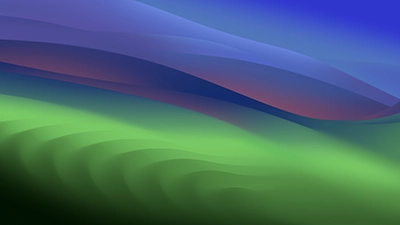

Wallpapers
Why Wallpaper Center?
Wallpaper Center is the ultimate destination for high-quality desktop wallpapers, offering a vast selection to suit any aesthetic.
Types of Wallpapers
Wallpaper Center offers a diverse range of wallpapers to match your specific needs, including dynamic wallpapers that change throughout the day, light and dark mode options for those who prefer a theme-based approach, and static high-resolution images. The dynamic wallpapers are perfect for users who want their backgrounds to evolve as their day progresses, while the light and dark mode options seamlessly integrate with your operating system settings, providing a cohesive look. Whether you want something minimalist, vibrant, or calming, Wallpaper Center’s wide array of choices ensures you’ll find the perfect fit.

Apple Stage
This wallpaper was designed to represent the rainbow arches located at Apple Park. Wallpaper was designed by Basic Apple Guy.
MacOS Sonoma
This wallpaper was part of Apples yearly MacOS release. Known as MacOS Sonoma, located in California. This is a dark mode wallpaper.
MacOS Monteray
This wallpaper was part of Apples yearly MacOS release. Known as MacOS Monteray, located in California. This software was released in Oct. of 2021. It rotates through several iterations.
Along with this wallpaper, there are several others available for download including offical MacOS wallpapers, and other curated wallpapers created by Basica Apple guy. Replace your boring wallpaper and check out some of the amazing wallpapers we have to offer.